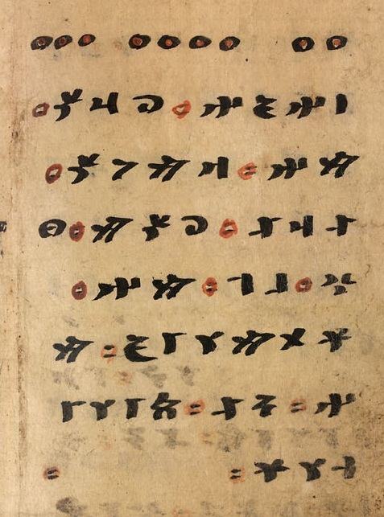

This is a test page for the Unicode Old Turkic script, rendered using the BabelStone Irk Bitig Colour font at 24 points. On Firefox (any platform), and on Internet Explorer, Edge or Chrome (Windows 10), the dice pips for the omen and the word separator mark should be rendered polychromatically (black and red). With applications that do not support the colour font format the dice pips and the word separator mark should be rendered in monochrome (identical to BabelStone Irk Bitig).
The text below is Omen 10 from the Old Turkic divination text Irk Bitig 𐰃𐰺𐰴 𐰋𐰃𐱅𐰃𐰏. The only surviving manuscript version of this text is held at the British Library with the callmark Or.8212/161.
⚂ ⚃ ⚁ |
|
𐰾𐰤𐰏𐰤⸱𐰉𐰺𐰽⸱ |
I am a yawning leopard. Among the reeds is my head. That brave and capable am I. Know thus: [prognostication missing]
Or. 8212/161 p. 12b : Irk Bitig Omen 10
